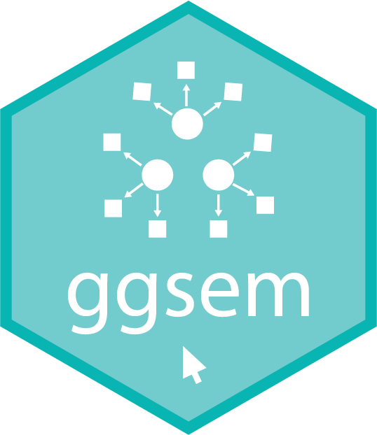
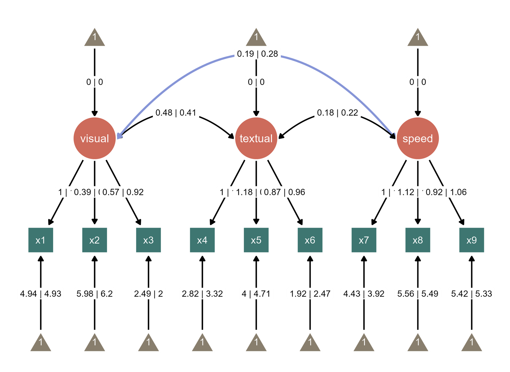
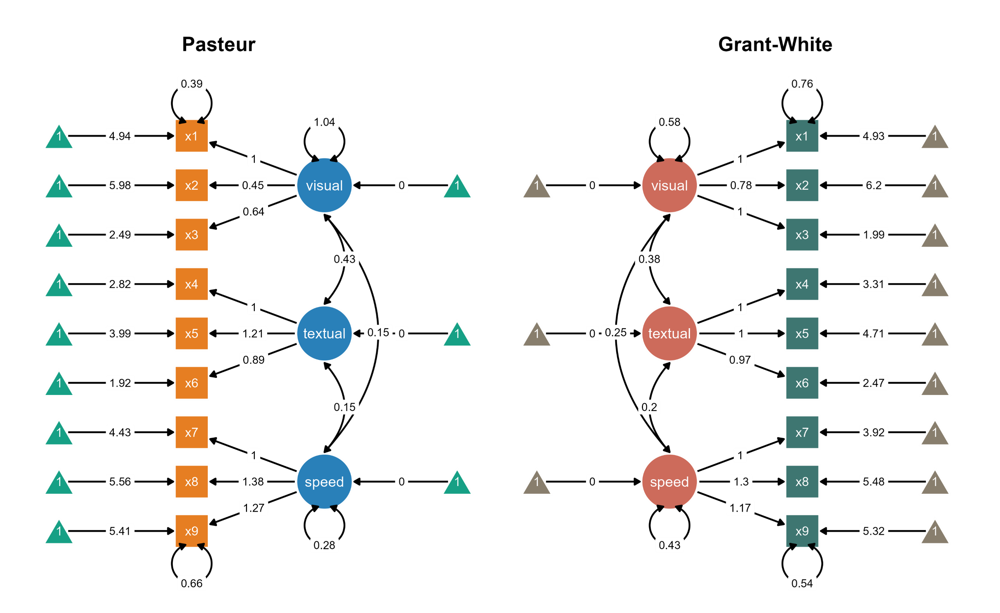
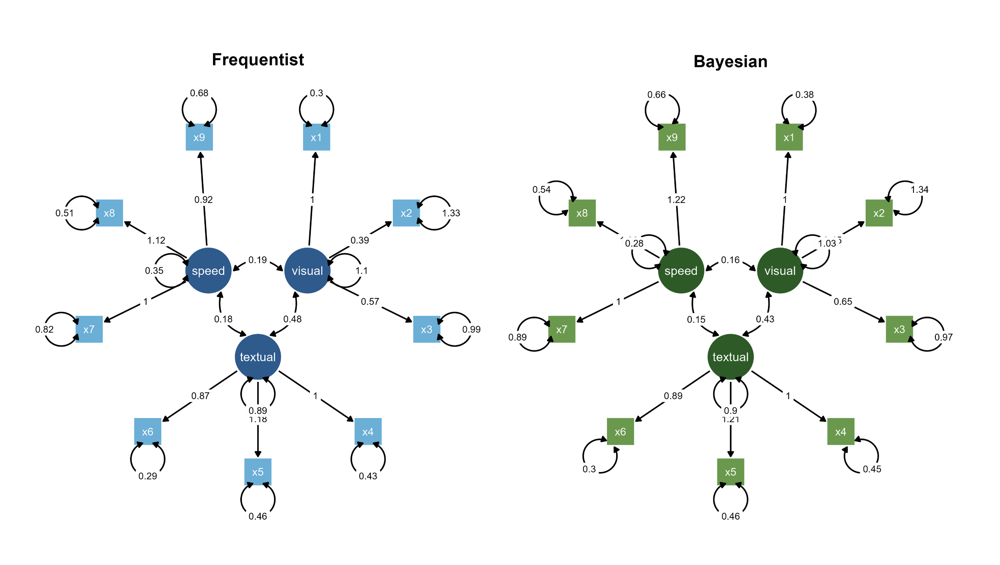
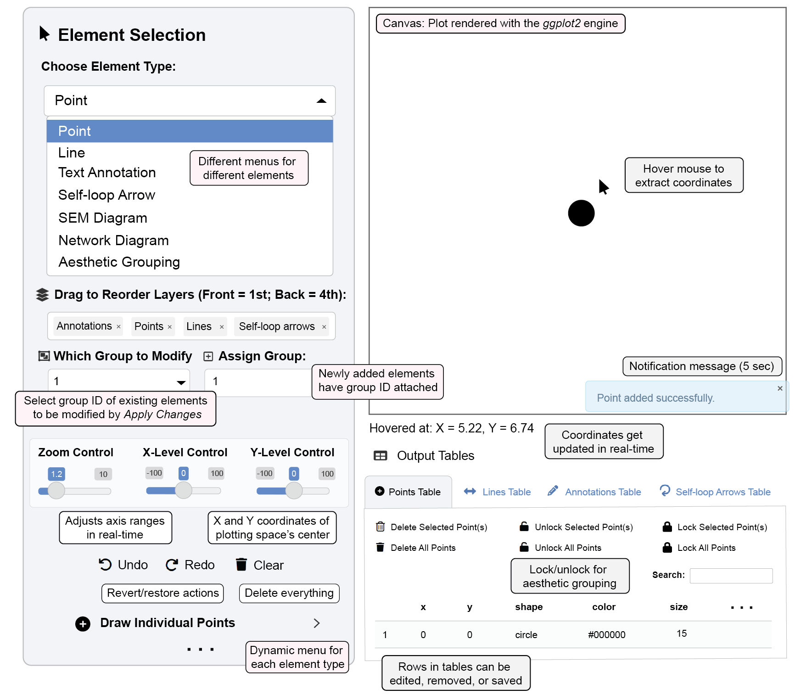

ggsem: Build, Visualize, and Explore Path Diagrams Interactively
Preface
Welcome to the ggsem tutorial book!
Visualizing structural equation modeling (SEM) presents a persistent workflow challenge: while statistical computation has become increasingly sophisticated in R, the final step of creating publication-quality visualizations remains frustratingly rigid. This issue is particularly noticeable when one creates a multi-group SEM diagram.
The ggsem package introduces Interactive Parameter Visualization, a workflow that maps aesthetics to statistical parameters of a model. This allows users to directly manipulate model parameters (nodes, edges, labels, loops etc) with a mouse click to control their graphical properties while keeping their statistical models intact. This eliminates the rigid, manual process of creating publication-ready diagrams. ggsem supports visualization of multi-group SEM diagram (side-by-side or composite figure), combined SEM diagram (multi-group labels in one SEM diagram), a single group SEM diagram, as well as network diagrams.
Here are some examples of multi-group SEM diagrams generated with ggsem (see Chapter 1).




Quadratic vs. Graded options) and color palettes.Workflow Expansion, Not Replacement
ggsem is designed as a workflow expander that integrates with about 9 classes of objects from 13 established packages, such as lavaan, tidySEM, OpenMx, semPlot, and igraph etc.
ggsem imports two types of outputs: Statistical Model Objects (e.g., fitted models from lavaan or OpenMx) to access parameters, and Visualization Objects (e.g., layouts from semPlot) to define the initial node positions. This dual-input system ensures maximum flexibility and reproducibility, and provides cross-package compatibility. In other words, you can:
Start with your existing
lavaan,blavaan, orOpenMxmodelsImport visualizations from
semPlot,tidySEM,lavaanPlot, or other packagesThen use
ggsem’s interactive environment to achieve publication-ready qualityStore metadata of figure output, and convert it to ggplot object in script-based workflow
Visualization Through Model Awareness
ggsem maintains awareness of your underlying statistical model. This means that you can achieve:
Parameter Control: Adjust visual properties through model parameters rather than manual positioning
Relationship Preservation: Moving central nodes automatically suggests adjustments to connected elements
Statistical Integration: Live parameter modification with immediate visual feedback, and highlighting paths that are statistically meaningful.
Multi-Group Management: Creating composite visualizations across multiple models or groups using a multi-group model or separate model objects
Complete Reproducibility
ggsem eliminates the reproducibility-breaking “PowerPoint step” from research workflows. Every adjustment—from color changes to layout modifications—is tracked. This means that all changes are exportable on script-based workflow into editable data files or images, as well as re-playable on the app.
Installation
You can install the stable version of ggsem from CRAN:
# install.packages(c("colourpicker", "DT", "DiagrammeR", "memoise", "shiny", "shinyjs", "smplot2", "svglite"), dependencies = TRUE)
install.packages("ggsem") # version 0.9.6Development version of ggsem can also be downloaded from Github:
devtools::install_github("smin95.com/ggsem")You can launch the app with this code below:
library(ggsem)
ggsem()It opens a blank canvas, where you can draw diagrams in two different ways: 1) Code-free visualization, 2) Integrated Visualization.

ggsem AppSEM and Network Visualizations
ggsem supports two complementary approaches tailored to different user needs:
1. Code-free Visualization: For New Users
For users without extensive R programming experience, ggsem provides a complete interface for creating sophisticated SEM and network diagrams from start to finish. This approach significantly lowers barriers to creating publication-quality visualizations without requiring specialized file formats or coding expertise. ggsem is also equipped with Generative AI models that could translate statistical models into natural language or vice versa.
2. Integrated Visualization
For advanced users, ggsem serves as a workflow enhancer that imports pre-existing models and visualizations from established R packages. This allows researchers to leverage their preferred analysis tools while gaining interactive refinement capabilities for final diagram polishing.
Loading Pre-existing SEM and Network Objects
ggsem provides direct integration with established R packages, allowing you to begin with pre-existing model objects and visualizations:
Supported Object Types
ggsem accepts objects from multiple popular R packages:
SEM Objects (More Info on Chapter 10):
lavaan: Fitted models (single or multi-group) fromlavaanpackageblavaan: Fitted Bayesian models (single or multi-group) fromblavaanpackagesemPlot: Objects (qgraphclass) fromlavaanorblavaanmodels- Also compatible with customized SEM layouts outputs created with
semptoolspackage
- Also compatible with customized SEM layouts outputs created with
sem_graph: Single or multi-group objects fromtidySEMpackage.MxRAMModel:OpenMxmodels (single or multi-group)- Also compatible with model outputs created with the
umxpackage.
- Also compatible with model outputs created with the
mplusObject:MplusmodelsgrViz: Objects fromlavaanPlotpackage (which depends ondiagrammeRpackage to render graphics)
Network Objects (More Info on Chapter 11):
igraph:igraphnetwork objectsnetwork:networkpackage objectsqgraph:qgraphnetwork objects (not SEM)